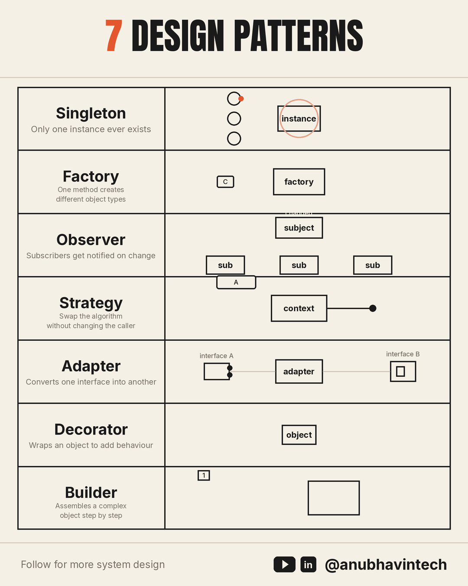
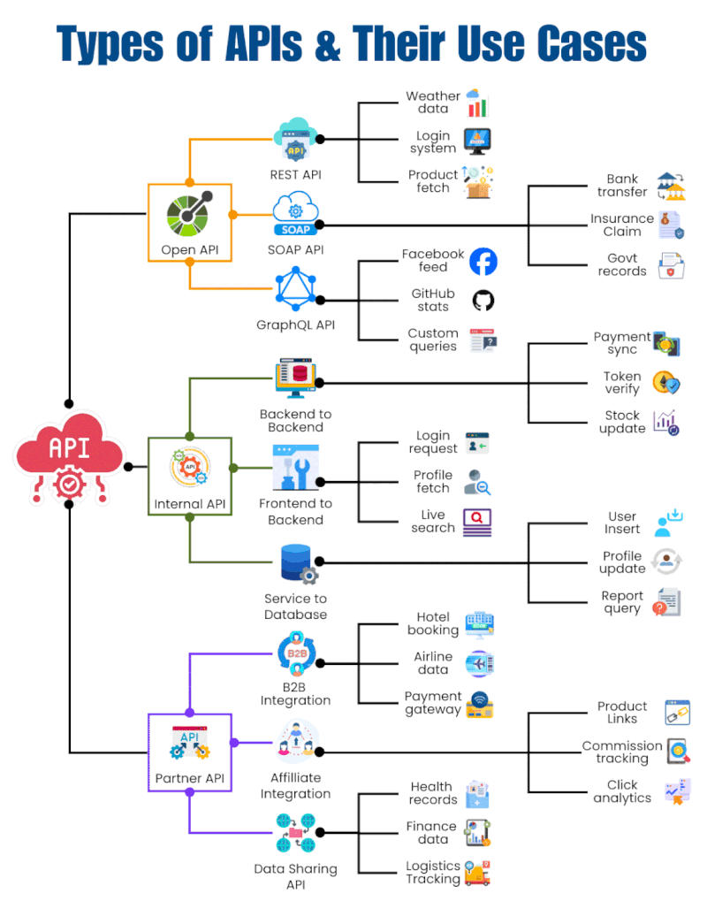
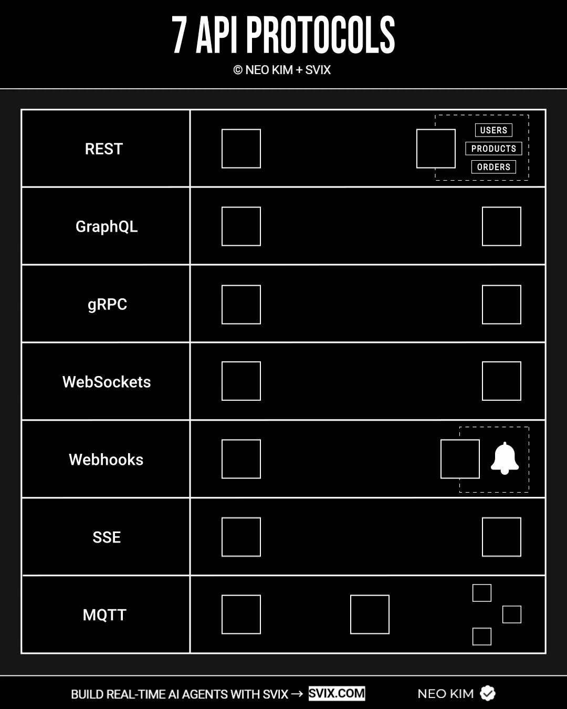
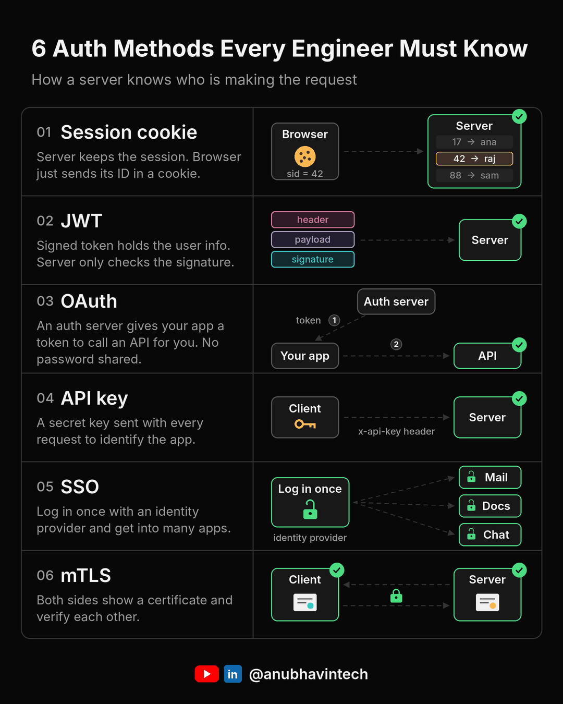
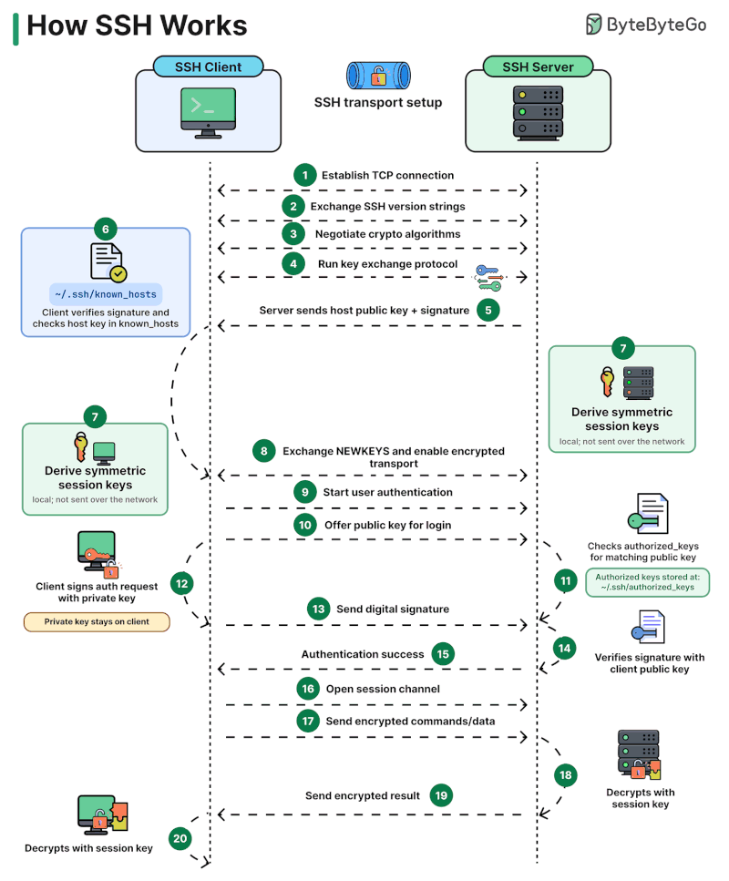
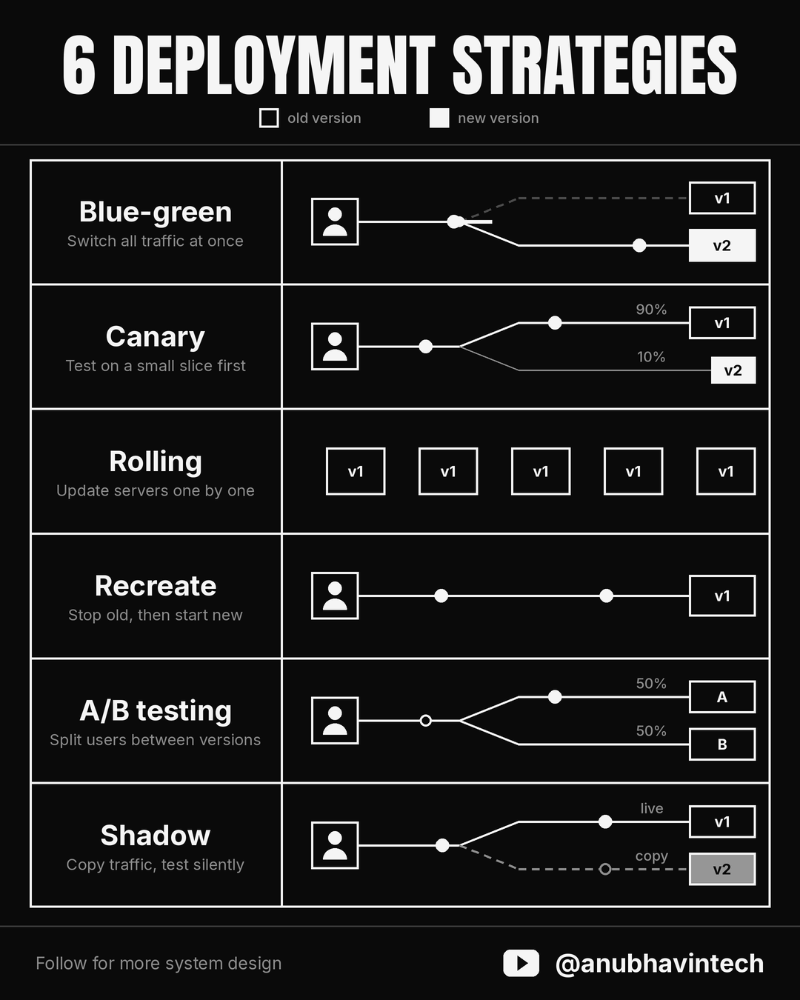
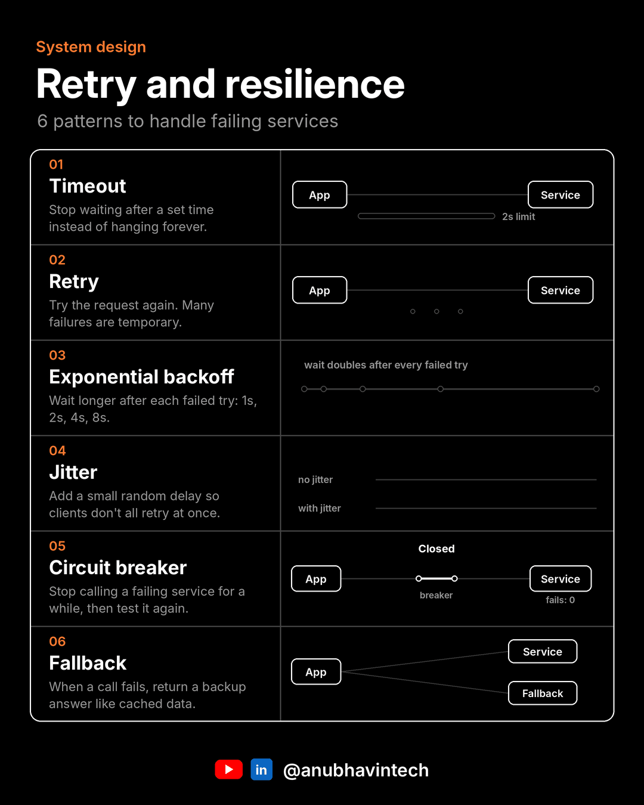

System Design Notes¶
Seven short LinkedIn posts on system design topics. They cover design patterns, API types, API protocols, authentication, how SSH works, deployment strategies, and retry and resilience. Each section below starts with the original post (cited and credited), then adds detail, trade-offs, and primary sources the post didn't have room for.
For the building blocks these notes sit on, see Architecture, APIs, Security, and Networking.
About the images
The infographics are copied from the original posts and remain the work of their authors. Each one is credited in its caption and linked back to the post. Posts 1–6 were read on 2026-10-15, post 7 on 2026-10-22.
| # | Topic | Post author | Posted |
|---|---|---|---|
| 1 | Design Patterns | Anubhav Sethi | 2026-10-04 |
| 2 | Types of APIs | Ritik Jain | 2026-10-11 |
| 3 | API Protocols | Neo Kim | 2026-09-24 |
| 4 | Auth Methods | Anubhav Sethi | 2026-10-09 |
| 5 | How SSH Works | Alex Xu (ByteByteGo) | 2026-10-01 |
| 6 | Deployment Strategies | Anubhav Sethi | 2026-09-26 |
| 7 | Retry and Resilience | Anubhav Sethi | 2026-10-20 |
1. Seven Design Patterns¶
Source
Anubhav Sethi, "7 design patterns that every engineer must know", LinkedIn, 2026-10-04. https://www.linkedin.com/posts/anubhavintech_systemdesign-designpatterns-softwareengineering-activity-7512460719934697472-f1qM

Image: © Anubhav Sethi (@anubhavintech), from the post above.
What the post says¶
Most bad code isn't wrong. It's just hard to change six months later. Design patterns exist to fix that second problem.
| Pattern | One-liner (from the post) | Typical use |
|---|---|---|
| Singleton | Only one instance ever exists, however many times it's requested | Shared config, connection pool. "Overused everywhere else." |
| Factory | One method creates different object types depending on what you ask for | Keeps the "which class do I create?" logic in one place |
| Observer | Subscribers are notified automatically when something they care about changes | Event systems, pub/sub |
| Strategy | Swap the algorithm without touching the code that calls it | Several ways to do one job: sorting, pricing rules |
| Adapter | Converts one interface into another so incompatible pieces work together | Wrapping a third-party library |
| Decorator | Wraps an object to add behaviour without changing the object | Middleware, logging wrappers |
| Builder | Assembles a complex object step by step | Avoiding a 12-argument constructor with many optional fields |
Interview tip from the post: in a low-level design (LLD) round, explaining why a pattern fits the problem matters more than naming it.
Going deeper¶
All seven come from the "Gang of Four" (GoF) catalogue1. GoF sorts its 23 patterns into three families, which tells you what problem each one solves:
| Family | Problem it solves | Patterns here |
|---|---|---|
| Creational | How objects get made | Singleton, Factory Method, Builder |
| Structural | How objects are composed | Adapter, Decorator |
| Behavioral | How objects communicate and divide work | Observer, Strategy |
Points the post leaves out:
- "Factory" is several patterns. GoF has Factory Method (a subclass decides which class to create) and Abstract Factory (creates a whole family of related objects). The post describes the everyday simple factory, a function with a
switch/dictlookup. That one is not in GoF, but it is the most common form in practice. - Singleton is mostly a warning. It is global mutable state, it hides dependencies, and it makes tests share state. The modern habit is to build one instance at the composition root and pass it in with dependency injection. You still get a single instance, without the global access. See Design Principles (Dependency Inversion).
- Strategy and Decorator are composition over inheritance. Both swap or stack behaviour at runtime instead of growing a class tree. This is GoF's own central advice: "Favor object composition over class inheritance."1
- Adapter and Decorator look alike but differ in intent. An Adapter changes the interface to match one the caller expects. A Decorator keeps the interface and adds behaviour. A Proxy keeps the interface and controls access.
- Observer at system scale is pub/sub. In-process Observer calls subscribers directly and synchronously. Across services, the same idea becomes a message broker (Kafka, RabbitMQ, MQTT, see §3) that decouples the publisher in time and in failure. One common bug: forgetting to unsubscribe, so the subject keeps dead listeners alive (a memory leak).
- Many languages have the pattern built in. Python decorators (
@functools.cache), first-class functions as strategies,dataclasseswith defaults instead of a Builder, a module as a natural singleton. Peter Norvig showed back in 1996 that 16 of the 23 GoF patterns are "invisible or simpler" in dynamic languages2.
Minimal Python sketches
# Strategy: the algorithm is just a parameter
def checkout(cart, pricing): # pricing: Callable[[Cart], float]
return pricing(cart)
regular = lambda c: c.total
black_fri = lambda c: c.total * 0.7
checkout(cart, black_fri)
# Simple factory: one place decides which class
PARSERS = {"json": JsonParser, "csv": CsvParser}
def make_parser(kind: str):
return PARSERS[kind]()
# Adapter: make a 3rd-party client look like *our* interface
class StripeGateway: # implements our PaymentGateway
def __init__(self, client): self._c = client
def charge(self, cents, token):
return self._c.PaymentIntent.create(amount=cents, payment_method=token)
# Decorator: same interface, extra behaviour
def logged(fn):
def wrapper(*a, **kw):
log.info("call %s", fn.__name__)
return fn(*a, **kw)
return wrapper
# Observer
class Subject:
def __init__(self): self._subs = []
def subscribe(self, fn): self._subs.append(fn)
def notify(self, event):
for fn in self._subs: fn(event)
# Builder (fluent)
req = (RequestBuilder("GET", "/users")
.header("Accept", "application/json")
.timeout(5)
.build())
When not to use a pattern: when no change is expected yet. Applying a pattern ahead of need is a classic YAGNI violation (see Design Principles). Refactor towards a pattern once the second or third variant actually shows up3.
2. Types of APIs¶
Source
Ritik Jain, "REST, GraphQL, SOAP… choosing an API isn't just about knowing the names", LinkedIn, 2026-10-11. https://www.linkedin.com/posts/rjritikjain_apis-backenddevelopment-softwareengineering-activity-7514878700392280064-0r3T

Image: © Ritik Jain, from the post above.
What the post says¶
| API | Example uses (from the visual) |
|---|---|
| REST | Weather data, login systems, product fetch |
| SOAP | Bank transfers, insurance claims, government records: enterprise settings where strict contracts matter |
| GraphQL | Social feeds, GitHub stats, custom queries: clients choose exactly the fields they need |
| Internal | Backend↔backend (payment sync, token verify), frontend↔backend (login, live search), service↔database |
| Partner | B2B integration (hotel booking, airline data, payment gateways), affiliate integration (commission tracking) |
| Data-sharing | Health records, finance data, logistics tracking |
The post's key point:
These categories aren't all mutually exclusive. REST, SOAP, and GraphQL describe API approaches, while internal, partner, and data-sharing APIs describe how or where APIs are used.
Questions to ask when designing one: Who consumes it? What data is exchanged? How do authentication and security work? What performance, reliability, and compatibility requirements apply?
Going deeper¶
The point about mutual exclusivity is the most useful part of the post. Treat an API as two independent choices:
flowchart LR
subgraph A["Axis 1 — Audience (who calls it)"]
P[Public / Open]
PA[Partner]
I[Internal / Private]
end
subgraph B["Axis 2 — Style (how it talks)"]
R[REST]
G[GraphQL]
S[SOAP]
RPC[gRPC]
E[Event / async]
end
A --- BA Stripe payment API is public + REST. A Netflix internal call is internal + gRPC. A bank-to-regulator feed may be partner + SOAP. "Data-sharing" is really a partner or public API whose payload is the product.
Audience changes the non-functional requirements more than the style does:
| Public | Partner | Internal | |
|---|---|---|---|
| Auth | API keys, OAuth 2.0 for user data | OAuth client credentials, mTLS, signed requests | mTLS or service mesh identity, short-lived tokens |
| Versioning | Strict; you can't see your callers | Contractual, negotiated deprecation windows | Can move faster; consumers are known (consumer-driven contract tests) |
| Rate limiting | Mandatory, per key | Per partner, often per SLA tier | Protective, against cascading failure |
| Docs | Public portal, OpenAPI, SDKs | Private portal, onboarding | OpenAPI / .proto in the repo |
| Typical style | REST (cacheable, universal) | REST or SOAP (legacy, regulated) | gRPC, events, REST |
On SOAP specifically. It is an XML envelope protocol (W3C SOAP 1.24) with a machine-readable contract (WSDL) and a family of WS-* standards (WS-Security for message-level signing and encryption, WS-ReliableMessaging). Those standards are why it survives in banking, insurance, and government, even though almost no new public APIs choose it.
On GraphQL. It fixes over-fetching and under-fetching for varied clients. The cost moves to the server: HTTP caching gets harder (one POST /graphql endpoint), you need query depth and cost limits to stop expensive queries, and per-field resolvers can cause the N+1 query problem, which tools like DataLoader batch away5.
The style comparison table and the contract rules (status codes, idempotency, versioning, pagination) are in APIs.
3. Seven API Protocols¶
Source
Neo Kim, "If you want to go GOD-level with API design, learn these 7 protocols", LinkedIn, 2026-09-24. https://www.linkedin.com/posts/nk-systemdesign-one_if-you-want-to-go-god-level-with-api-design-activity-7508871465753034753--hym
Disclosure in the original: the post and graphic are co-branded with and sponsored by Svix, a webhook-infrastructure vendor.

Image: © Neo Kim + Svix, from the post above (animated).
What the post says¶
| Protocol | Mechanism | Use cases |
|---|---|---|
| REST | Resources + standard HTTP methods, stateless | CRUD APIs for web and mobile |
| GraphQL | Client requests exactly the data it needs | Apps with complex or changing data requirements |
| WebSockets | Bidirectional connection kept open | Chat, multiplayer games, real-time updates |
| gRPC | Remote calls via strongly typed contracts | Fast internal microservice communication |
| Webhooks | Event notifications pushed from one system to another | Event-driven workflows, real-time AI agents |
| MQTT | Lightweight publish/subscribe messages | IoT, unreliable or low-bandwidth networks |
| SSE | Server streams updates to the client over HTTP | Live feeds, notifications, AI response streaming |
Going deeper¶
The seven differ mainly in who starts the conversation and whether the connection stays open:
| Protocol | Transport | Direction | Connection | Payload | Spec |
|---|---|---|---|---|---|
| REST | HTTP/1.1, 2, 3 | client → server (request/response) | short-lived | usually JSON | Fielding, 20006 |
| GraphQL | usually HTTP POST |
client → server (+ subscriptions) | short-lived (subscriptions use WS/SSE) | JSON | GraphQL spec5 |
| gRPC | HTTP/2 | unary, server-stream, client-stream, bidi | long-lived, multiplexed | Protocol Buffers (binary) | grpc.io7 |
| WebSockets | TCP, upgraded from HTTP | full-duplex | long-lived | text or binary frames | RFC 64558 |
| SSE | HTTP | server → client only | long-lived | UTF-8 text events | WHATWG HTML9 |
| Webhooks | HTTP POST |
server → another server | one request per event | usually JSON | Standard Webhooks10 |
| MQTT | TCP (or WebSocket) | pub/sub via a broker | long-lived | binary, tiny header | OASIS MQTT 5.011 |
Choosing between them:
flowchart TD
Q1{Who initiates?}
Q1 -->|Client asks| Q2{Internal service-to-service<br/>and latency-sensitive?}
Q2 -->|Yes| GRPC[gRPC]
Q2 -->|No| Q3{Many clients needing<br/>different shapes of data?}
Q3 -->|Yes| GQL[GraphQL]
Q3 -->|No| REST[REST]
Q1 -->|Server pushes| Q4{Receiver is...}
Q4 -->|Another server| WH[Webhooks]
Q4 -->|Browser, one-way| SSE[SSE]
Q4 -->|Browser, two-way| WS[WebSockets]
Q4 -->|Constrained devices,<br/>flaky network| MQTT[MQTT]Practical notes on each:
- gRPC in browsers. Browsers can't speak raw gRPC (they don't expose HTTP/2 trailers), so you need gRPC-Web plus a proxy, or Connect. This is why gRPC usually stays internal.
- WebSockets need more operations work than they first appear to. Connections are stateful, so load balancers need sticky sessions or a shared pub/sub backplane (Redis) to fan messages out across nodes. You also own heartbeats, reconnects, and back-pressure.
- SSE is often enough. If the client only listens (notifications, dashboards, LLM token streaming), SSE is plain HTTP. It passes through proxies, and the browser's
EventSourcereconnects automatically, resuming from theLast-Event-IDheader. On HTTP/1.1 browsers limit each origin to about 6 connections, which HTTP/2 removes. - Webhooks: the hard parts are what Svix sells. The receiver must verify an HMAC signature (do not trust the source IP) and reject old timestamps to stop replays. It should respond
2xxfast and process asynchronously, and it should be idempotent, because senders retry and deliver at least once. The Standard Webhooks spec codifies these headers. - MQTT QoS levels:
0at most once (fire and forget),1at least once (may duplicate),2exactly once (four-step handshake, most expensive). Retained messages give a new subscriber the last known value, and Last Will announces a device that disconnected uncleanly11. - Webhooks vs. polling. Polling every N seconds adds up to N seconds of latency and wastes most requests. Webhooks deliver immediately, but the receiver must be reachable and must handle duplicates. Many systems use both: webhooks for speed, plus a periodic reconcile poll so missed events still get picked up.
4. Six Auth Methods¶
Source
Anubhav Sethi, "6 Auth Methods Every Engineer Should Know", LinkedIn, 2026-10-09. https://www.linkedin.com/posts/anubhavintech_systemdesign-softwareengineering-authentication-share-7514229617755369472-wjLf

Image: © Anubhav Sethi (@anubhavintech), from the post above.
What the post says¶
| # | Method | How it works | Good for |
|---|---|---|---|
| 1 | Session cookie | Server stores the session; the browser holds only an ID in a cookie | Classic web apps |
| 2 | JWT | Signed token carries user info; server checks the signature, no DB lookup | Stateless APIs. You can't easily revoke one before it expires. |
| 3 | OAuth | Auth server gives an app a token to call an API on your behalf; no password shared | "Sign in with Google", third-party access |
| 4 | API key | One secret sent with every request; identifies the app, not the user | Server-to-server, public APIs |
| 5 | SSO | Log in once with an identity provider, get into many apps | Companies with many internal tools |
| 6 | mTLS | Client and server both present certificates and verify each other | Service-to-service traffic |
The post's summary:
Sessions and JWT answer "who is this user?" OAuth answers "what is this app allowed to do for the user?" API keys and mTLS answer "which app or service is this?"
Going deeper¶
These are not six alternatives. They sit at different layers, and real systems stack them. A typical SaaS uses SSO (OIDC) to log the user in, a session cookie to keep them logged in, OAuth access tokens (often JWTs) for its API, API keys for customer scripts, and mTLS between its own microservices.
flowchart LR
U((User)) -->|"SSO login (OIDC/SAML)"| IdP[Identity Provider]
IdP -->|ID token| Web[Web app]
Web -->|"session cookie<br/>(HttpOnly, Secure, SameSite)"| U
Web -->|"OAuth access token (JWT)"| API[Public API]
Script[Customer script] -->|API key| API
API -->|mTLS| Svc1[Orders svc]
Svc1 -->|mTLS| Svc2[Billing svc]| Method | Where state lives | Revocation | Main pitfall | Spec / guidance |
|---|---|---|---|---|
| Session cookie | Server (DB/Redis) | Instant: delete the row | CSRF, session fixation | OWASP Session Mgmt12 |
| JWT | In the token | Hard: wait for expiry or keep a denylist | alg: none / algorithm confusion, long expiries, storing in localStorage (XSS) |
RFC 751913, OWASP JWT14 |
| OAuth 2.0 | Auth server | Revoke grant / refresh token | Using it as login without OIDC; implicit flow | RFC 674915, PKCE RFC 763616 |
| API key | Server lookup | Rotate the key | Leaked in git, URLs, or client apps; no user context | — |
| SSO | Identity provider | Disable the user at the IdP | IdP becomes a single point of failure | OIDC17, SAML 2.0 |
| mTLS | Certificates (PKI) | Short-lived certs, CRL/OCSP | Certificate rotation and CA operations | RFC 8446 (TLS 1.3)18, RFC 870519 |
Corrections and additions to the post:
- OAuth is authorization, not authentication. "Sign in with Google" is really OpenID Connect (OIDC), a thin identity layer on OAuth 2.0 that adds an ID token saying who logged in17. Plain OAuth only says what an app may do. For browser and mobile apps use the authorization code flow with PKCE16. The implicit flow is deprecated in OAuth 2.1.
- Common JWT practice: short-lived access token (5–15 min) plus a long-lived, revocable refresh token stored server-side. This keeps most of the "stateless" benefit and bounds the revocation problem the post mentions.
- Session cookies are not obsolete. For a browser-only app on one domain, a server-side session with
HttpOnly; Secure; SameSite=Laxcookies is often safer than a JWT in JavaScript-reachable storage. - API keys: send them in a header, never in the query string (URLs end up in logs). Scope them, rate-limit them per key, store only a hash, and make rotation easy.
- mTLS in practice is usually automated by a service mesh (Istio, Linkerd) or SPIFFE/SPIRE workload identities, so applications never handle certificates.
- Missing from the list: passkeys / WebAuthn (phishing-resistant public-key login, the direction user authentication is heading), and HTTP Basic, which is fine only over TLS for internal tooling.
AuthN vs. AuthZ, 401 vs. 403, and the OAuth sequence diagram are in Security.
5. How SSH Works¶
Source
Alex Xu (ByteByteGo), "How SSH Works", LinkedIn, 2026-10-01. https://www.linkedin.com/posts/alexxubyte_systemdesign-coding-interviewtips-share-7511431696815169537-EaNa

Image: © ByteByteGo, from the post above (animated).
What the post says¶
Secure Shell gives secure access to a remote machine over an unsecured network:
- The client opens a TCP connection to the SSH server.
- Both sides exchange version strings, negotiate crypto algorithms, and run a key exchange.
- The server sends its host public key + a signature. The client verifies it and checks the host key against
~/.ssh/known_hosts. - Both sides derive the same symmetric session keys independently: "Same keys, computed separately, never put on the wire."
- The client starts user authentication by offering its public key. The server looks it up in
~/.ssh/authorized_keys. - The client signs the auth request with its private key. "The private key never leaves your machine." The server verifies the signature with the public key.
- Authentication succeeds, a session channel opens, and commands and results flow encrypted.
Going deeper¶
SSH is three protocols stacked on each other, and the diagram's 20 steps map onto them:
| Layer | RFC | Diagram steps | Job |
|---|---|---|---|
| Transport | RFC 425320 | 1–8 | Server authentication, key exchange, encryption, integrity |
| User authentication | RFC 425221 | 9–15 | Prove who the user is (publickey, password, keyboard-interactive…) |
| Connection | RFC 425422 | 16–20 | Multiplex channels over the one encrypted pipe: shells, exec, port forwarding, SFTP |
sequenceDiagram
participant C as Client
participant S as Server
Note over C,S: Transport layer (RFC 4253)
C->>S: TCP connect :22
C-->>S: SSH-2.0-OpenSSH_x (version)
C->>S: KEXINIT (algorithm lists)
S->>C: KEXINIT
C->>S: ephemeral public key (e.g. X25519 / ML-KEM hybrid)
S->>C: ephemeral key + host key + signature over exchange hash H
Note over C: verify signature, check known_hosts
Note over C,S: both compute shared secret K → derive keys from (K, H)
C->>S: NEWKEYS
S->>C: NEWKEYS
Note over C,S: User auth (RFC 4252) — now encrypted
C->>S: "publickey" method, key blob (no signature yet)
S->>C: PK_OK (key is in authorized_keys)
C->>S: same request + signature by private key
S->>C: USERAUTH_SUCCESS
Note over C,S: Connection (RFC 4254)
C->>S: CHANNEL_OPEN "session" → exec / shellDetails the diagram compresses:
- The key exchange is (EC)Diffie-Hellman with throwaway keys. Both sides create ephemeral key pairs and combine them into a shared secret K that never crossed the wire. Because these keys are discarded, an attacker who later steals the server's long-term host key still cannot decrypt recorded sessions. This property is forward secrecy. OpenSSH 9.0 made a post-quantum hybrid (
sntrup761x25519) the default, and OpenSSH 10.0 moved tomlkem768x25519-sha25623. - The host key signs the exchange hash H, a hash of everything negotiated so far. That ties the server's identity to this key exchange, which defeats man-in-the-middle attacks, provided the client already trusts the host key.
- Trust on first use (TOFU). On the first connection
known_hostsis empty, sosshshows a fingerprint and asks. That prompt is the moment a MITM can succeed, so verify the fingerprint out of band, or use SSH certificates or DNSSSHFPrecords. The later warningREMOTE HOST IDENTIFICATION HAS CHANGEDmeans stop and find out why. - Session keys are per direction. Separate encryption and integrity keys are derived for client→server and server→client. Modern ciphers like
chacha20-poly1305@openssh.comand AES-GCM provide both at once. - The "offer then sign" two-step (steps 10–13) lets the client ask "would you accept this key?" before unlocking a passphrase-protected key or touching a hardware token.
Practical hardening (see also Running a Server):
ssh-keygen -t ed25519 -C "you@laptop" # modern key type; add a passphrase
ssh-copy-id user@host # appends your .pub to authorized_keys
ssh-keygen -lf /etc/ssh/ssh_host_ed25519_key.pub # on the server: fingerprint to compare on first connect
# /etc/ssh/sshd_config
PasswordAuthentication no
PermitRootLogin no
KbdInteractiveAuthentication no
6. Six Deployment Strategies¶
Source
Anubhav Sethi, "6 deployment strategies every engineer must know!", LinkedIn, 2026-09-26. https://www.linkedin.com/posts/anubhavintech_systemdesign-softwareengineering-devops-activity-7509452041816297474-e7Q9. The post credits Neo Kim as its inspiration.

Image: © Anubhav Sethi (@anubhavintech), from the post above (animated).
What the post says¶
Most outages don't come from bad code. They come from how that code was shipped.
| Strategy | How (from the post) | Trade-off |
|---|---|---|
| Blue-green | Two identical environments; switch all traffic at once; switch back in seconds | Double the servers |
| Canary | Send ~10% of users to the new version, watch errors and latency, increase slowly | Catches bugs before everyone sees them |
| Rolling | Update servers one by one while the rest keep serving | Old and new versions run side by side, so they must be backward compatible |
| Recreate | Stop old fully, then start new | Simple, but causes downtime. Fine for internal tools. |
| A/B testing | Split users between versions and compare clicks or sign-ups | About product decisions, not release safety |
| Shadow | Copy real traffic to the new version and discard its responses | Tests under real load with zero user risk |
Interview tip from the post: don't name a single strategy. Discuss the trade-off between speed, cost, and risk.
Going deeper¶
| Strategy | Downtime | Extra capacity | Rollback speed | Users exposed to a bad release | Versions live at once |
|---|---|---|---|---|---|
| Recreate | Yes | None | Slow (redeploy) | All, after the gap | 1 |
| Rolling | No | ~1 extra instance (surge) | Medium (roll back) | Growing fraction | 2 |
| Blue-green | No | 2× | Instant (flip router) | All at once | 1 (2 deployed) |
| Canary | No | Small | Fast (route 0%) | Small slice first | 2 |
| A/B | No | Small | Fast | Chosen cohort | 2+ |
| Shadow | No | Up to 2× | Nothing to roll back | None | 2 (one invisible) |
Things that decide whether these work in practice:
- The database is the hard part. Blue-green and rolling both mean two app versions share one database, so schema changes must work with both. Use expand → migrate → contract (Fowler's parallel change24): add the new column, write to both, backfill, switch reads, and only then drop the old column in a later release. This is the backward-compatibility rule from the post, applied to data.
- Canary needs automatic judgment. A canary is only as good as the signals it watches. Define the error rate, p99 latency, and saturation thresholds up front, and let the tool promote or abort on its own. Argo Rollouts and Flagger do this on Kubernetes25. Sticky routing (by user ID) keeps one person from bouncing between versions.
- Shadow traffic must have no side effects. If the shadow version sends emails, charges cards, or writes to the real database, it isn't a test any more. Stub or sandbox the outbound calls. Mirroring is supported natively by Istio (
mirror:) and Envoy. - A/B testing is an experiment, not a deploy strategy. It needs a hypothesis, a primary metric, a sample size fixed in advance, and statistical significance. It is usually done with feature flags inside one deployed build, not with two deployments.
- Feature flags separate deploy from release. Code ships dark and gets turned on per user, percentage, or region. This makes most of the strategies above cheaper and gives you a kill switch. See Becoming Senior on progressive delivery.
- What Kubernetes gives you natively: a
Deploymentsupports onlyRollingUpdate(tuned withmaxSurge/maxUnavailable) andRecreate26. Blue-green, canary, and shadow need a service mesh, ingress weights, or a rollout controller.
# Kubernetes rolling update: never drop below desired capacity, add one pod at a time
spec:
replicas: 5
strategy:
type: RollingUpdate
rollingUpdate:
maxSurge: 1
maxUnavailable: 0
A reasonable default: rolling for stateless internal services; canary with automated analysis for anything customer-facing; blue-green when you need instant, whole-system rollback (or for infrastructure you can't run two versions of side by side); shadow before a risky rewrite. The pipeline side of this is in CI/CD Platforms (§10, How the Deploy Actually Happens).
7. Retry and Resilience¶
Source
Anubhav Sethi, "6 Retry and Resilience Mechanism every software engineer must know", LinkedIn, 2026-10-20. https://www.linkedin.com/posts/anubhavintech_systemdesign-distributedsystems-softwareengineering-activity-7518159253979860992-wuQ0
Shared to this handbook via Chuong Loc's repost (2026-10-21).

Image: © Anubhav Sethi (@anubhavintech), from the post above (animated).
What the post says¶
Every service fails at some point. What matters is how our system handles it.
| # | Pattern | What it does (from the post) |
|---|---|---|
| 1 | Timeout | Don't wait forever. If a call takes too long, give up and move on. |
| 2 | Retry | Many failures are temporary, so try again. |
| 3 | Exponential backoff | Wait 1s, then 2s, 4s, 8s, giving the service time to recover. |
| 4 | Jitter | Add a small random delay, otherwise thousands of clients retry at the same moment and knock the service down again. |
| 5 | Circuit breaker | If a service keeps failing, stop calling it for a while. Fail fast, then test it again later. |
| 6 | Fallback | When all else fails, return something useful, like cached data or a default response. |
The post's key line: "Retries without backoff and jitter can turn a small outage into a big one."
Going deeper¶
The six are layers around a single remote call, and the order you stack them matters. Resilience4j, the common Java library, wraps them by default as Retry(CircuitBreaker(RateLimiter(TimeLimiter(Bulkhead(call)))))27: every attempt gets its own timeout, every attempt counts toward the breaker, and an open breaker makes the retry fail fast instead of waiting.
flowchart LR
App --> FB[Fallback]
FB --> R["Retry<br/>backoff + jitter"]
R --> CB[Circuit breaker]
CB --> T[Timeout]
T --> Svc[(Remote service)]
CB -. open .-> FB
R -. gave up .-> FBTimeout
- Set it from data. Use a little above the dependency's observed p99.9 latency, not a round number. Separate the connect timeout (short) from the read timeout.
- Use deadlines, not just timeouts. If the user request has 2s total, a call three services deep should get what's left, not a fresh 2s. gRPC propagates deadlines across calls for exactly this reason28.
- No timeout is the most common bug here. Many HTTP clients default to waiting forever (Python
requestsamong them), so one slow dependency ties up every worker thread.
Retry
- Only retry what can succeed next time: connection errors,
503,429(respectRetry-After), timeouts. Never retry400,401,403, or404: the answer won't change. - Only retry idempotent operations, or make them idempotent with an idempotency key (see APIs). Otherwise a retried payment can charge twice.
- Retry at one layer only. If five layers each retry 3 times, one failing call at the bottom becomes 3⁵ = 243 calls. The Google SRE book calls this retry amplification and recommends a per-client retry budget: stop retrying once retries exceed about 10% of requests29.
Exponential backoff + jitter
Plain backoff still makes clients that failed together retry together. AWS's analysis30 found "full jitter" (pick a random wait between 0 and the backoff ceiling) does the least total work and finishes soonest:
import random, time
RETRYABLE = {429, 502, 503, 504}
def call_with_retry(fn, max_attempts=5, base=0.1, cap=10.0):
for attempt in range(max_attempts):
try:
return fn()
except HttpError as e:
if e.status not in RETRYABLE or attempt == max_attempts - 1:
raise
ceiling = min(cap, base * 2 ** attempt) # 0.1, 0.2, 0.4, ... capped
time.sleep(random.uniform(0, ceiling)) # full jitter
In practice use a library instead of hand-rolling: tenacity (Python), Resilience4j (Java), Polly (.NET), cockatiel (TypeScript), or your service mesh's retry policy.
Circuit breaker
Described by Michael Nygard in Release It!31 and popularised by Martin Fowler32:
stateDiagram-v2
[*] --> Closed
Closed --> Open: failure rate over threshold
Open --> HalfOpen: cool-down elapsed
HalfOpen --> Closed: trial calls succeed
HalfOpen --> Open: trial call fails- Trip on failure rate over a sliding window (for example ≥50% of the last 100 calls, with a minimum call count), not on N failures in a row. Count slow calls as failures too.
- One breaker per dependency, and ideally per endpoint, so one bad endpoint doesn't block healthy ones.
- Watch it. Breaker state changes are some of the most useful alerts you can have: they tell you which dependency is unhealthy.
Fallback
- Good fallbacks are simpler than the main path: stale cached data, a static default, hiding a non-essential widget, queueing a write for later.
- Be careful with fallbacks that call another system. That path rarely runs, so it's rarely tested, and it often fails exactly when load is highest. Amazon's guidance is to prefer making the primary path more reliable over adding fallbacks33.
- Never silently fall back on writes. Pretending a payment or an order succeeded is worse than an honest error.
Missing from the list:
| Pattern | What it does |
|---|---|
| Bulkhead | Separate thread or connection pools per dependency, so one slow service can't use up every worker |
| Rate limiting / load shedding | The server rejects excess work early (429 / 503) instead of slowing down for everyone |
| Hedged requests | Send a second copy of a slow request to another replica and take whichever answers first. Cuts tail latency, from Google's The Tail at Scale34 |
| Idempotency keys | What makes retrying writes safe at all |
The code-level view (exception handling, fail fast, graceful degradation) is in Error Handling.
References¶
Original posts¶
- Anubhav Sethi. 7 design patterns that every engineer must know. LinkedIn, 2026-10-04. link
- Ritik Jain. REST, GraphQL, SOAP… choosing an API isn't just about knowing the names. LinkedIn, 2026-10-11. link
- Neo Kim (with Svix). If you want to go GOD-level with API design, learn these 7 protocols. LinkedIn, 2026-09-24. link
- Anubhav Sethi. 6 Auth Methods Every Engineer Should Know. LinkedIn, 2026-10-09. link
- Alex Xu / ByteByteGo. How SSH Works. LinkedIn, 2026-10-01. link
- Anubhav Sethi. 6 deployment strategies every engineer must know! LinkedIn, 2026-09-26. link
- Anubhav Sethi. 6 Retry and Resilience Mechanism every software engineer must know. LinkedIn, 2026-10-20. link. Reposted by Chuong Loc, 2026-10-21: link
Primary sources for the added material¶
-
E. Gamma, R. Helm, R. Johnson, J. Vlissides. Design Patterns: Elements of Reusable Object-Oriented Software. Addison-Wesley, 1994. Illustrated catalogue: refactoring.guru/design-patterns. ↩↩
-
P. Norvig. Design Patterns in Dynamic Languages. 1996. norvig.com/design-patterns. ↩
-
J. Kerievsky. Refactoring to Patterns. Addison-Wesley, 2004. ↩
-
W3C. SOAP Version 1.2 Part 1: Messaging Framework. w3.org/TR/soap12-part1. ↩
-
GraphQL Foundation. GraphQL Specification. spec.graphql.org. See also graphql.org/learn/performance. ↩↩
-
R. T. Fielding. Architectural Styles and the Design of Network-based Software Architectures, ch. 5. PhD dissertation, UC Irvine, 2000. ics.uci.edu/~fielding/pubs/dissertation/rest_arch_style.htm. ↩
-
gRPC Authors. Core concepts, architecture and lifecycle. grpc.io/docs/what-is-grpc/core-concepts. ↩
-
I. Fette, A. Melnikov. RFC 6455: The WebSocket Protocol. IETF, 2011. rfc-editor.org/rfc/rfc6455. ↩
-
WHATWG. HTML Living Standard §9.2 Server-sent events. html.spec.whatwg.org/multipage/server-sent-events.html. ↩
-
Standard Webhooks specification. standardwebhooks.com · github.com/standard-webhooks/standard-webhooks. ↩
-
OASIS. MQTT Version 5.0. OASIS Standard, 2019. docs.oasis-open.org/mqtt/mqtt/v5.0/mqtt-v5.0.html. ↩↩
-
OWASP. Session Management Cheat Sheet. cheatsheetseries.owasp.org. ↩
-
M. Jones, J. Bradley, N. Sakimura. RFC 7519: JSON Web Token (JWT). IETF, 2015. rfc-editor.org/rfc/rfc7519. See also RFC 8725: JWT Best Current Practices. ↩
-
OWASP. JSON Web Token for Java Cheat Sheet (language-agnostic pitfalls). cheatsheetseries.owasp.org. ↩
-
D. Hardt (ed.). RFC 6749: The OAuth 2.0 Authorization Framework. IETF, 2012. rfc-editor.org/rfc/rfc6749. OAuth 2.1 draft: oauth.net/2.1. ↩
-
N. Sakimura et al. RFC 7636: Proof Key for Code Exchange (PKCE). IETF, 2015. rfc-editor.org/rfc/rfc7636. ↩↩
-
OpenID Foundation. OpenID Connect Core 1.0. openid.net/specs/openid-connect-core-1_0.html. ↩↩
-
E. Rescorla. RFC 8446: The Transport Layer Security (TLS) Protocol Version 1.3. IETF, 2018. rfc-editor.org/rfc/rfc8446. ↩
-
B. Campbell et al. RFC 8705: OAuth 2.0 Mutual-TLS Client Authentication and Certificate-Bound Access Tokens. IETF, 2020. rfc-editor.org/rfc/rfc8705. ↩
-
T. Ylonen, C. Lonvick. RFC 4253: The Secure Shell (SSH) Transport Layer Protocol. IETF, 2006. rfc-editor.org/rfc/rfc4253. ↩
-
T. Ylonen, C. Lonvick. RFC 4252: The SSH Authentication Protocol. IETF, 2006. rfc-editor.org/rfc/rfc4252. ↩
-
T. Ylonen, C. Lonvick. RFC 4254: The SSH Connection Protocol. IETF, 2006. rfc-editor.org/rfc/rfc4254. ↩
-
OpenSSH. Release notes (9.0, 10.0). openssh.com/releasenotes.html. ↩
-
D. Sato. ParallelChange. martinfowler.com, 2014. martinfowler.com/bliki/ParallelChange.html. See also M. Fowler, BlueGreenDeployment (2010) and D. Sato, CanaryRelease (2014). ↩
-
Argo Project. Argo Rollouts: Progressive Delivery for Kubernetes. argoproj.github.io/argo-rollouts. ↩
-
Kubernetes. Deployments: Strategy. kubernetes.io/docs/concepts/workloads/controllers/deployment/#strategy. ↩
-
Resilience4j. Getting Started: Aspect order. resilience4j.readme.io/docs/getting-started-3. ↩
-
gRPC Authors. Deadlines. grpc.io/docs/guides/deadlines. ↩
-
B. Beyer et al. (eds.). Site Reliability Engineering. O'Reilly, 2016. Ch. 21 "Handling Overload" (per-client retry budget of 10%): sre.google/sre-book/handling-overload. Ch. 22 "Addressing Cascading Failures" (retry amplification across layers): sre.google/sre-book/addressing-cascading-failures. ↩
-
M. Brooker. Exponential Backoff And Jitter. AWS Architecture Blog, 2015. aws.amazon.com/blogs/architecture/exponential-backoff-and-jitter. See also Timeouts, retries, and backoff with jitter, Amazon Builders' Library. ↩
-
M. T. Nygard. Release It! Design and Deploy Production-Ready Software, 2nd ed. Pragmatic Bookshelf, 2018. ↩
-
M. Fowler. CircuitBreaker. martinfowler.com, 2014. martinfowler.com/bliki/CircuitBreaker.html. ↩
-
J. Gabrielson. Avoiding fallback in distributed systems. Amazon Builders' Library. aws.amazon.com/builders-library/avoiding-fallback-in-distributed-systems. ↩
-
J. Dean, L. A. Barroso. The Tail at Scale. Communications of the ACM 56(2), 2013. research.google/pubs/the-tail-at-scale. ↩